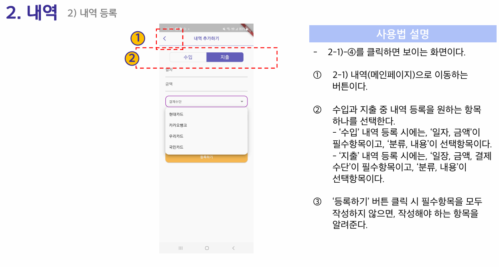
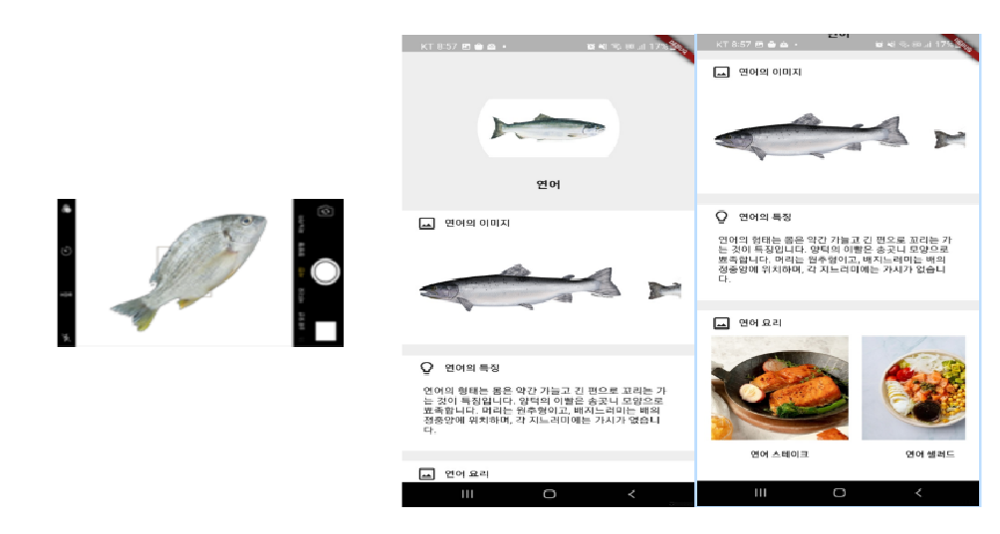
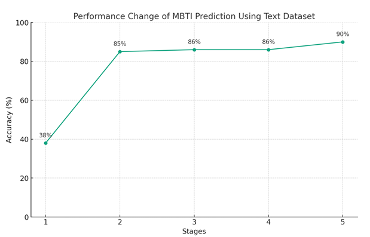
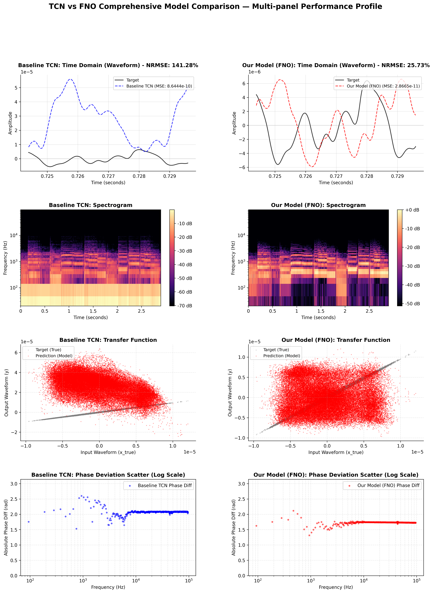
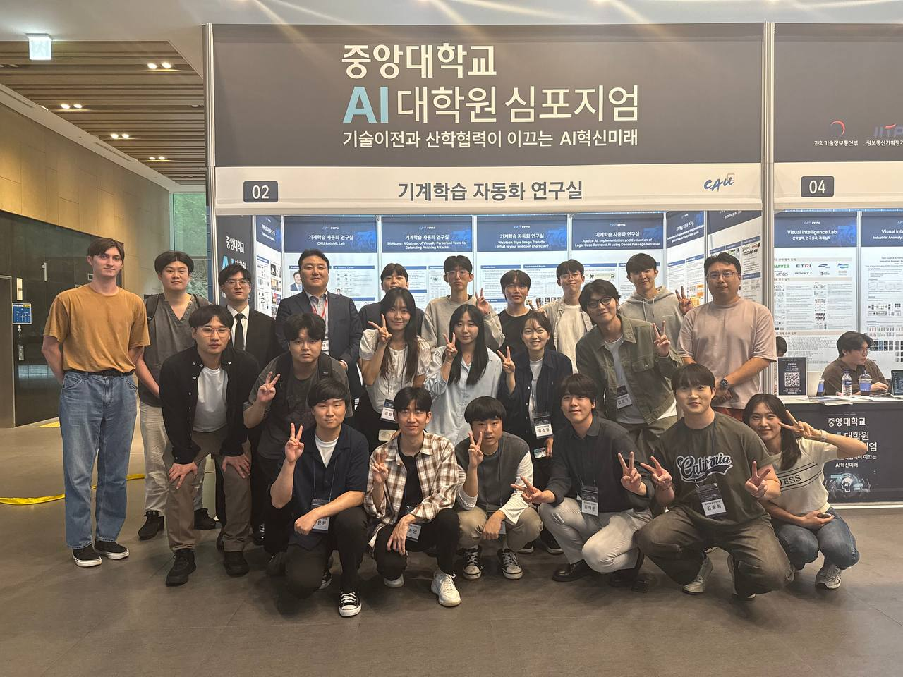
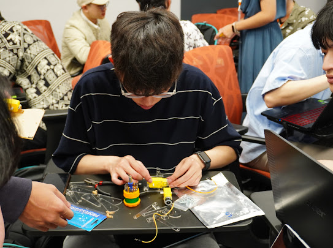

Journal
Effective Industrial Anomaly Localization using Class-Conditioned Irredundant Feature Patch Selection
Pattern Analysis and Applications, Springer Nature (SCI-E) · Under Review
Robot Vision · 산업 이상 탐지 · False Positive 억제
엣지 환경 Feature 선별 & 데이터 큐레이션
안녕하세요, 정세훈입니다. 중앙대학교 AI 대학원 석사과정에서 AutoML Lab (지도교수: 이재성 교수)의 연구원으로 활동하고 있습니다.
산업 현장의 이미지에서 반복 배경 패턴이 결함으로 오인되는 False Positive 문제를 하드웨어 증설 없이 데이터 큐레이션으로 해결하는 연구에 집중하고 있습니다. 학사 과정에서 쌓은 모바일·백엔드 개발 경험과 석사 과정의 Vision AI 연구를 융합하여, 제한된 자원에서 실제로 작동하는 AI를 만드는 것을 목표로 합니다.
Pattern Analysis and Applications, Springer Nature (SCI-E) · Under Review
중앙대학교 AI 대학원 석사학위논문 · 심사 통과 (2026년 1학기) · 지도교수: 이재성
대한전자공학회(IEIE) 하계학술대회 · 제1저자 · E-T-S 프레임워크 & GII 모듈 설계 → 학위논문의 출발점
CAU AutoML Lab, 중앙대학교 · 서울, 대한민국
CAU AutoML Lab (AI대학원 사업) · 서울, 대한민국

2022모바일 앱 개발 | 백엔드 아키텍처 & DB
소비·지출 정보 비대칭 문제를 해결하고자 달력 기반 월별 수입·지출 관리와 카테고리별 통계를 제공하는 안드로이드 앱 설계·구현. Google OAuth 로그인과 Firebase 기반 실시간 DB 연동으로 데이터 일관성 확보.

2023캡스톤디자인(2) | 데이터 엔지니어링 & AI 모델링
수산물 시장 어종 속임수·가격 불투명성을 AI로 해결. 웹 크롤링으로 어종·회 이미지를 직접 수집·라벨링해 YOLOv4 학습. Base64 인코딩 기반 클라이언트-서버 파이프라인으로 엣지 환경 실시간 추론 구현. 수산물 시장 Open API 연동으로 당일 시세 제공.

2023빅데이터 | 모델 최적화 & 하이퍼파라미터 튜닝
Kaggle MBTI 데이터(8,600건) + 추가 텍스트(106,000건) 결합. BERT 임베딩 + GridSearchCV 기반 SVC(RBF) 앙상블 설계. 분류 정확도 38% → 90% 달성, 4지표 개별 분류 평균 96% 정확도.
 2023
2023
캡스톤디자인(1) | 데이터 파이프라인 & 모델 학습
유튜브·OTT 수집 보컬 원시 데이터에 MR 제거·노이즈 캔슬링 전처리 파이프라인 직접 설계, 학습 품질 획기적 향상. 드래그 앤 드롭 UI를 포함한 웹 애플리케이션으로 서비스화. "데이터 품질이 모델 성능을 결정한다"는 원칙 체득.

2025신경망특론 | 개인 프로젝트
192kHz 고해상도 시계열 신호 대상 TCN 14개 변형 모델 직접 구현. Causal vs. Non-causal 조건의 성능 상한과 실시간 처리 제약 trade-off를 MSE·STFT Loss·Pearson 상관계수로 정량 검증.
중앙대학교 AI 대학원 | 지도교수: 이재성 교수 / AutoML Lab
2024.09 — 2026.08 졸업 예정
학위논문: 「클래스 조건부 비중복 특징 패치 선별을 이용한 산업 이상 위치 탐지 연구」 (심사 통과, 2026)
중앙대학교 창의ICT공과대학
2017.03 — 2024.08

2025 · 제1저자 발표

2024

2023.01 — 2023.02 · Chiang Mai, Thailand
산업용 이상 탐지 연구 발표 — 경량화·오탐 억제에 대한 산업 현장의 실제 수요 확인.
학부 간 협력 및 연합 행사 기획·운영 총괄.
초등학생 대상 프로그래밍 기초 교육 봉사 활동.